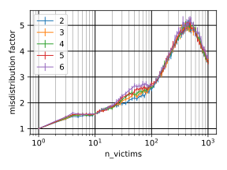

Incoming

Mitigating DNS Amplification Attacks using a set of Geographically-Distributed SDN Routers.

n = Number of barrier routers.r = Max relative catchment area.m = Misdistribution factor = r * n.m and r as functions of n for different hyperparameters
of the internet model.Hyperparameter: Average node degree

m and r aren't affected much by choice of hyperparameters.m is low. This means attack can be well-divided.